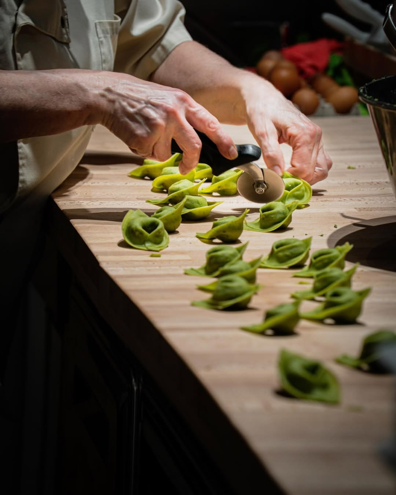
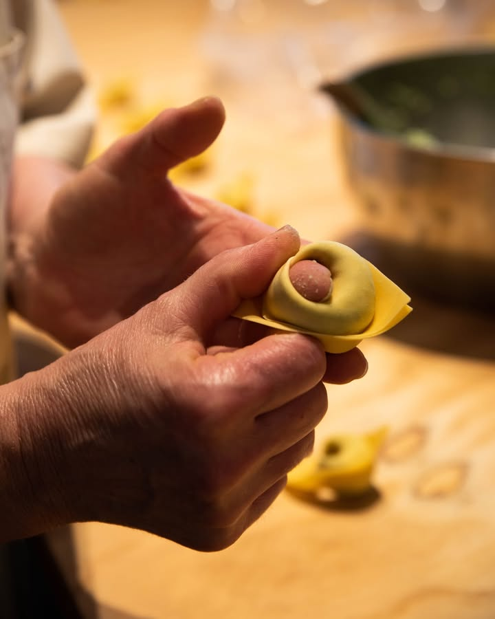
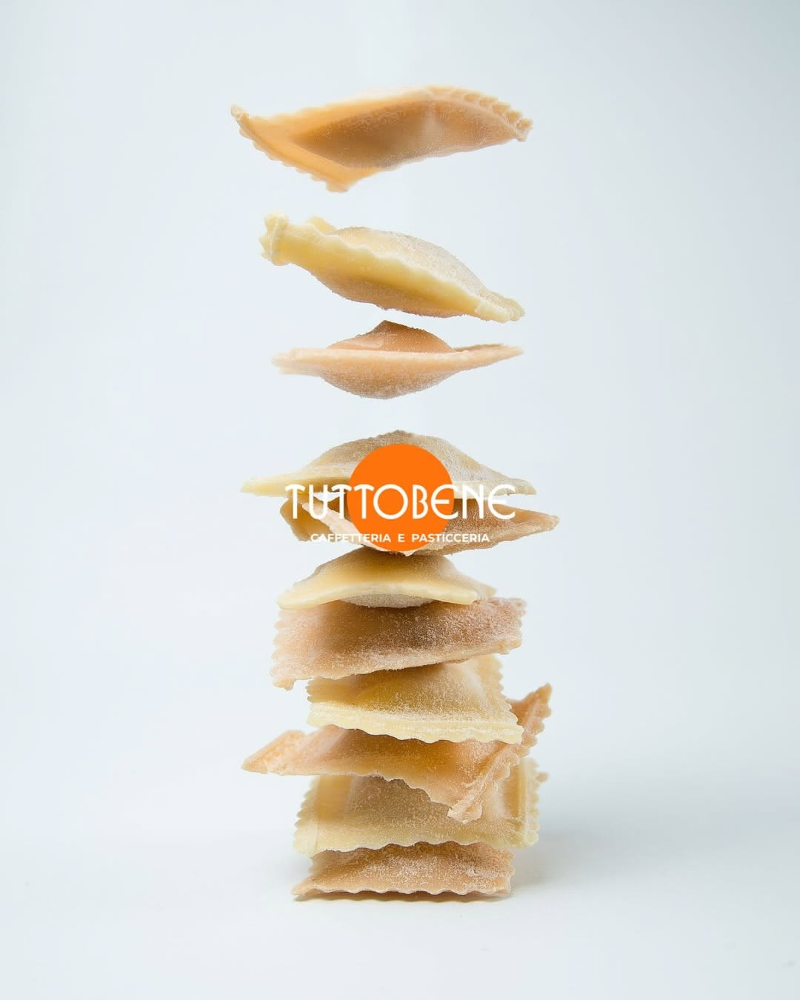
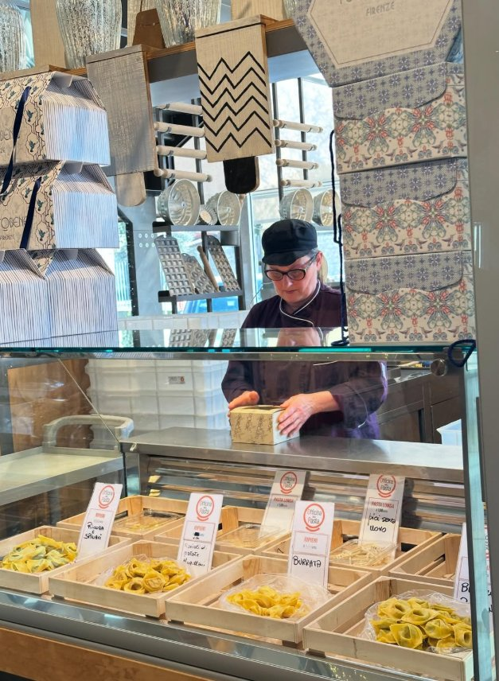

The laboratory
Fresh pasta, handmade
A heart of flour and eggs beats in the restaurant: the exposed fresh pasta laboratory, where every day the expert hands of the team roll the dough as it was done in the old days. Direct sales and express ravioli, from rolling pin to plate.
- 01
Tortellini & Tortelloni
Hand-sealed one by one, with traditional fillings: ricotta and spinach, mugellana potatoes, burrata.
- 02
Green spinach puff pastry
The green pasta of the past: fresh spinach mixed into the pastry, for brightly colored tagliatelle and lasagna.
- 03
Tagliatelle & long pasta
Pulled and cut at home - the truffle ones are famous, cited by customers as unmissable. Also pici without egg.
- 04
Express ravioli
Freshly prepared and also sold to take home: Tuttobene pasta on the everyday table.




